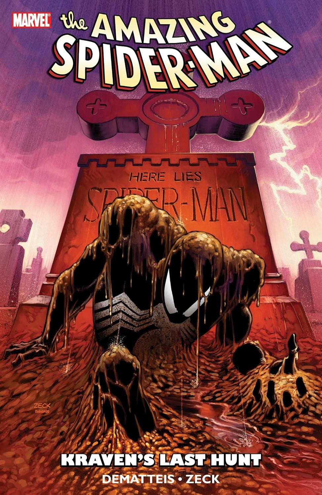
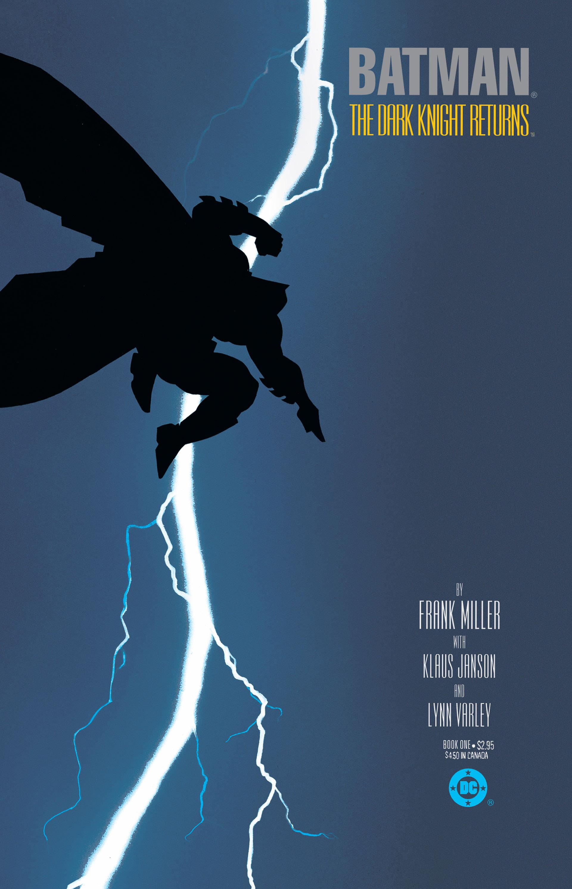
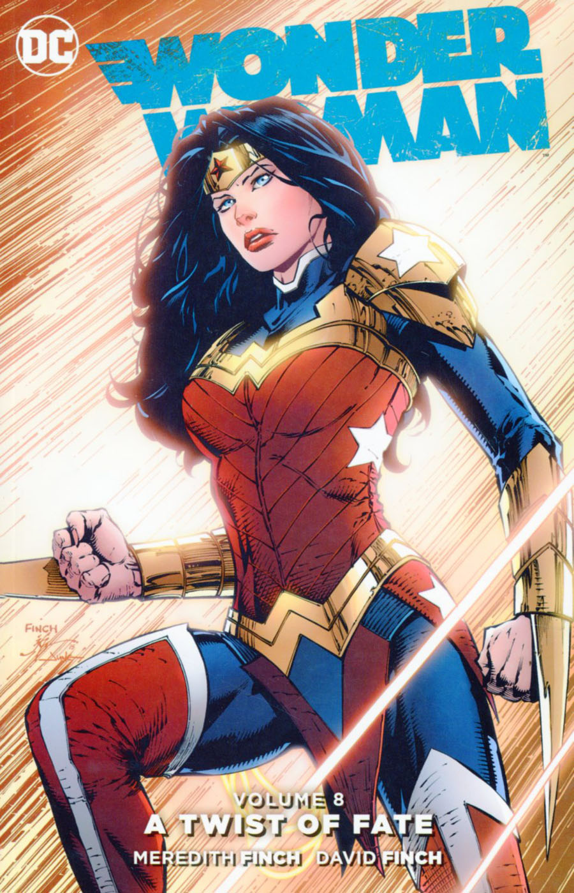
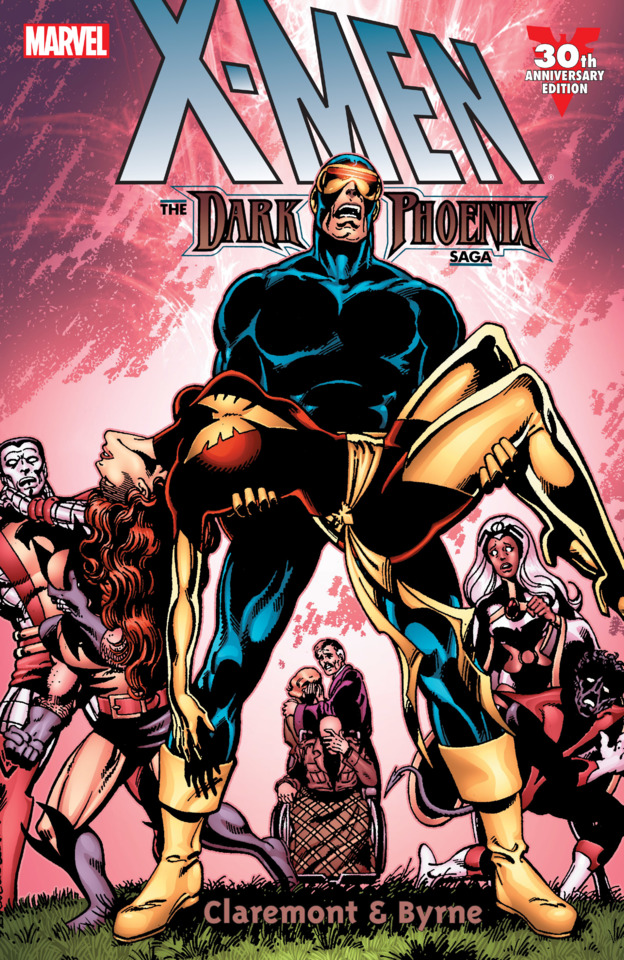
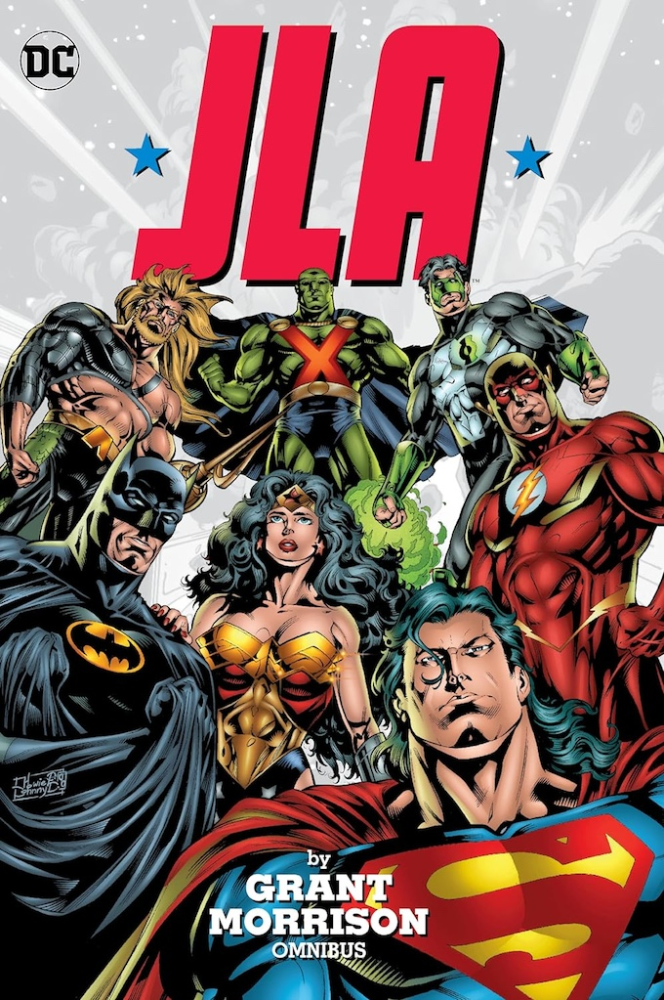
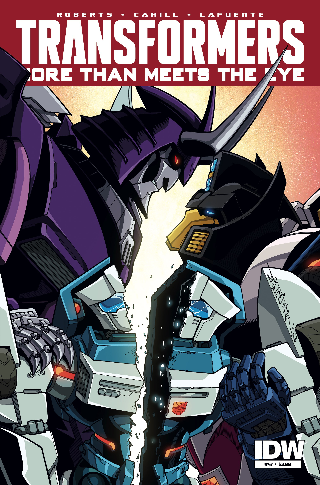
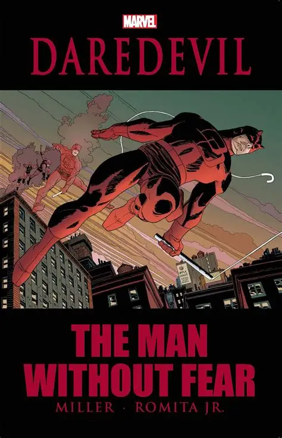
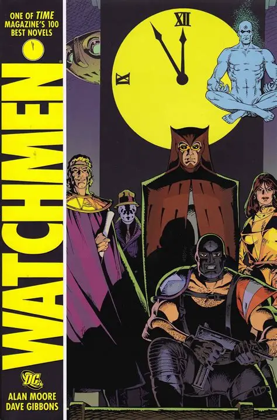
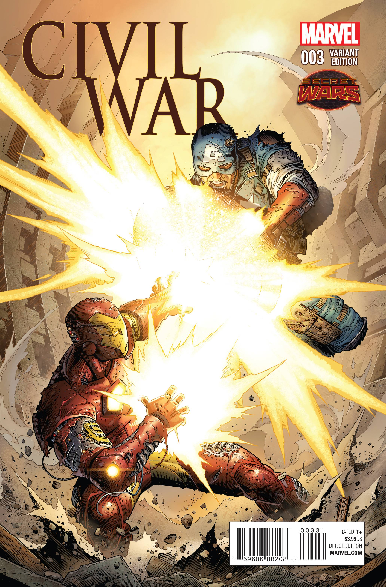

Amazing Spider-Man

Classic Spider-Man stories like "The Night Gwen Stacy Died" and "Kraven's Last Hunt" show Peter Parker facing tragedy, responsibility, and the cost of being a hero in New York City.
Batman

Influential runs such as "The Dark Knight Returns" and "Year One" dive into Bruce Wayne's past, his brutal future, and the psychological battle for Gotham.
Wonder Woman

The George Pérez era and the modern New 52 and Rebirth runs reimagine Diana’s mythological roots, her Amazonian family, and her role as an ambassador for peace.
X-Men

Legendary arcs like "The Dark Phoenix Saga" and "Days of Future Past" explore themes of prejudice, power, and sacrifice as mutants fight for acceptance.
Justice League

Runs such as Grant Morrison's JLA and the New 52 Justice League bring DC’s biggest heroes together against threats no one hero could face alone.
Transformers

Critically acclaimed series like "Transformers: More Than Meets the Eye" and "Transformers: Lost Light" mix space adventure, comedy, and drama as Autobots and Decepticons struggle with identity and purpose.
Daredevil

Famous runs by Frank Miller and Brian Michael Bendis put Matt Murdock through gritty street-level crime, broken identities, and moral dilemmas in Hell’s Kitchen.
Watchmen

"Watchmen" is a self-contained classic that deconstructs superheroes with a dark, political, and psychological look at power, control, and responsibility.
Civil War

"Marvel Civil War" pits hero against hero as Iron Man and Captain America clash over freedom, security, and the Superhuman Registration Act.